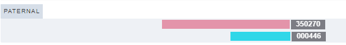

Who Was John Johnson?
Unravelling Family Mysteries Through Genealogic Visualizations
It’s hard to imagine how a little bit of spit could unravel a family mystery, but in the case of our team member Karin, that is exactly what it did.
With the advent of affordable direct-to-consumer DNA testing, millions of people have spit in a tube or swabbed their cheeks, hoping to learn more about their ancestors. Lots of people pay attention to the bioregional estimates (e.g. X% of your DNA appears to come from Ireland, Y% Ivory Coast & Ghana, etc.). This sort of statistical analysis gives varying results, since each company uses a different algorithm and reference sample. While this can yield some insights, other techniques can help pinpoint the specific location of any human in the tapestry of all people.
One approach for figuring out how DNA testers are related to one another is to examine triangulated segments--a stretch of DNA that is shared by three different individuals. This is strong evidence that a common ancestor is the source of that DNA.
The visualization below shows a schematic diagram of part of Karin’s paternal copy of chromosome 2. We created this visualization using a neat specialized genetic genealogy visualization tool called DNA Painter. The two segments shown here are from two of the DNA relatives mentioned later in our story. You can see that these segments of DNA overlap. If these two people also share that stretch of DNA with each other (spoiler alert: they do!), this constitutes strong evidence that the shared, triangulated segment of DNA comes from a common ancestor.
(Visualization created in DNA Painter)
The data we visualize below comes from the GEDmatch database. People who have tested their DNA with different testing companies (e.g. AncestryDNA, 23andMe) can choose to upload their results to GEDmatch. Their terms of service allow us to share insights, as long as we mask the identities of anyone who hasn’t given their explicit permission to be identified. All names here are from living DNA testers who have agreed for us to share their names, or from their deceased ancestors. We’ve also masked the identities of some deceased individuals who were born after 1940. All ID numbers for DNA testers have been anonymized (i.e. these are not their GEDmatch IDs.)
Below is a network graph showing triangulated segments for DNA matches to Karin. Each node represents a DNA tester. The size of the nodes corresponds to the amount of DNA each tester shares with Karin. (On average, people who share more DNA are more closely related). The edges indicate shared segments. Note that we haven’t included Karin or her parents (both of whom have been tested), since doing so would clutter the view.
This graph shows us lots of clusters of interconnected people, but without further context, it doesn’t tell us very much.
Let’s start to assign some of these matches to different categories. Since Karin’s parents come from different communities, we should be able to identify matches as being on her maternal or paternal sides.
Two of the DNA testers in this network are siblings of Karin’s father. What would happen if we color-code them and use the corresponding color for the edges connecting them to others?
This view starts to show some of the clusters of matches who are related on Karin’s dad’s side of the family. The two large nodes are Karin’s aunt and uncle. Mouse over them to see! (Note that this won’t identify all paternal matches, as some may not have triangulated segments with this aunt and uncle).
Karin’s maternal grandfather George Nelson also tested his DNA before he died, and he gave Karin permission to share information about his results. Here’s a diagram of Karin’s ancestors that goes back one more generation, showing her four grandparents.
If we now color George and his connections in the network graph, we can also identify the matches who are related to Karin via George.
We can also identify a match related through Karin’s maternal grandmother (Bonny Sharp), as well as two related through Claire McElroy (Barry’s paternal grandmother).
Highlighting matches connected to some known relatives starts to provide some meaning to this network graph, but how do we move from this to solving mysteries about unknown people?
Karin’s surname is Borgerson. She inherited that name from her father Barry, who inherited it from his father Raymond. However, Raymond wasn’t born with that surname. He took his stepfather’s name. When he was born, his name was Raymond Willard Johnson. Here’s an image of his birth certificate:

Washington Board of Health, Certificate of Birth, Registration District 1, record no. 49, file no 19319, registered no 39 (1915), Raymond Willard Johnson; Center for Health Statistics, Department of Health, Tumwater; certified copy privately held by Barry Raymond Borgerson, (address for private use,) Wake Forest, North Carolina, 2015.
This shows Raymond’s father as John Raphael Johnson, a blacksmith born in Houghton, Michigan around 1880. It turns out that there are a lot of men named John Johnson born about that time. However, extensive research in the paper trail does not identify a John Johnson who appears to be the right man. Family lore says that John Johnson originally had a French surname, but changed it because it was “unpronounceable”. Before incorporating DNA, Karin’s research hit a brick wall at her great-grandfather.
Barry Borgerson (Karin’s dad) agreed to spit in a tube for AncestryDNA. His DNA matches included a large number of people descended from French Canadians and early white inhabitants of Wisconsin, and these people also shared DNA with a known paternal cousin, suggesting that these matches were on the Raymond Johnson side of his family.
It was likely that these matches were on Raymond’s fathers side (John Johnson) rather than his mother’s side (Claire McElroy) because
- the ancestry of Barry’s paternal grandmother was fairly well known and didn’t include anyone from Quebec or Wisconsin, and
- these matches did not cluster with known matches on the Claire McElroy side.
We won’t bore you with the details, but a lot of research uncovered how some of those matches were related to one another. We’ll highlight three of them here that are included in the GEDmatch dataset. All three are descended from Moise Douillette (b. ~1843 Quebec, d. 1921 Wisconsin) and Seraphine Brunette (b. 1854 Wisconsin, died 1886 Wisconsin). One is their great-grandchild via their daughter Margaret; two are great-great-great-grandchildren via their son Ralph. Here’s a pedigree chart showing how they’re related. Note that this includes the two people from the chromosome map we showed earlier to illustrate triangulated segments.
It turns out that Ralph Douyette, a blacksmith who was married with four children, went away to work in another town in the summer of 1909. He never returned, and his family never knew his fate. DNA testing among descendants has confirmed that he was the same John Raphael Johnson (purported to have once had a French surname) who married Claire McElroy in Washington in 1912 and appears on Raymond Johnson’s birth certificate. Here’s a more complete family tree:
Here’s one last view of our network graph, with known matches on the Ralph Douyette side (and their triangulated connections) added to our color-coding: